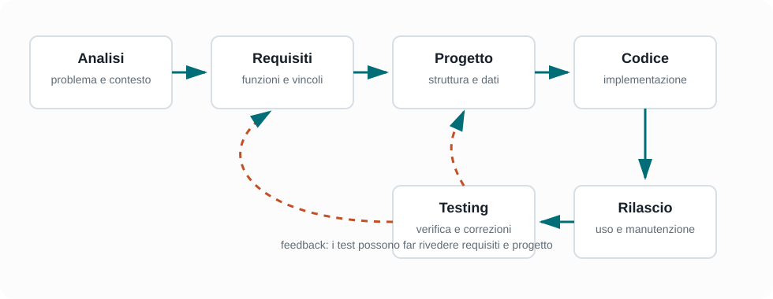

Capitoletto 1
Ciclo di sviluppo
Il software non nasce direttamente dal codice. Prima si capisce il problema, poi si definisce cosa deve fare il sistema, si progetta una soluzione, la si realizza, la si verifica e la si mantiene nel tempo.
Obiettivi della lezione
- Comprendere le fasi principali del ciclo di vita del software.
- Distinguere analisi del problema e analisi dei requisiti.
- Riconoscere requisiti funzionali e non funzionali.
- Collegare progettazione, implementazione, testing e manutenzione.
- Capire perché un progetto software deve essere documentato mentre viene costruito.
Che cosa significa sviluppare software
Sviluppare software significa costruire un sistema informatico capace di risolvere un problema reale. Il risultato finale può essere un'applicazione web, un programma desktop, un'app mobile, un servizio di rete, un gestionale scolastico o un sistema embedded.
La parte visibile è il codice, ma dietro il codice ci sono decisioni: quali utenti useranno il sistema, quali dati verranno trattati, quali funzioni sono necessarie, quali errori vanno evitati e quali vincoli devono essere rispettati.
Le fasi del ciclo di sviluppo

| Fase | Domanda principale | Risultato atteso |
|---|---|---|
| Analisi del problema | Quale problema dobbiamo risolvere? | Descrizione del contesto, degli utenti e degli obiettivi. |
| Analisi dei requisiti | Che cosa deve fare il sistema? | Elenco ordinato dei requisiti funzionali e non funzionali. |
| Progettazione | Come sarà organizzata la soluzione? | Architettura, moduli, interfacce, dati e scelte tecniche. |
| Implementazione | Come traduciamo il progetto in codice? | Codice sorgente, configurazioni e risorse dell'applicazione. |
| Testing | Il sistema funziona come richiesto? | Test, correzioni e maggiore fiducia nel comportamento. |
| Rilascio e manutenzione | Come lo mettiamo in uso e lo aggiorniamo? | Distribuzione, assistenza, patch e nuove versioni. |
Analisi del problema
L'analisi del problema serve a capire la situazione prima di immaginare la soluzione. In questa fase non si dovrebbe partire subito dal linguaggio di programmazione o dalla grafica, perché il rischio e costruire bene qualcosa che non risolve il bisogno corretto.
Un buon punto di partenza e descrivere gli attori coinvolti. Gli attori sono persone, ruoli o sistemi esterni che interagiscono con il software: studenti, docenti, segreteria, amministratori, clienti, magazzinieri, sensori, servizi web e così via.
| Elemento da chiarire | Esempio per un registro di prestiti in biblioteca |
|---|---|
| Problema | I prestiti vengono annotati su carta e si perdono informazioni. |
| Utenti | Bibliotecario, studente, docente responsabile. |
| Obiettivo | Registrare prestiti, restituzioni e libri disponibili. |
| Vincoli | Uso da browser, dati leggibili solo dagli utenti autorizzati. |
Requisiti funzionali e non funzionali
I requisiti funzionali descrivono le funzioni offerte dal sistema: cosa l'utente può fare e quali risposte deve ottenere. I requisiti non funzionali descrivono qualità e vincoli: sicurezza, prestazioni, usabilità, compatibilità, affidabilità, privacy e manutenibilità.
| Tipo | Formula tipica | Esempio |
|---|---|---|
| Funzionale | Il sistema deve permettere di... | Il sistema deve permettere al bibliotecario di registrare un nuovo prestito. |
| Funzionale | Quando accade X, il sistema deve... | Quando un libro viene restituito, il sistema deve aggiornare la disponibilità. |
| Non funzionale | Il sistema deve garantire... | Solo gli utenti autorizzati possono modificare i prestiti. |
| Non funzionale | Il sistema deve essere... | Le pagine principali devono caricarsi in tempi accettabili anche con molti libri. |
Progettazione e implementazione
La progettazione trasforma i requisiti in una struttura. Si decide quali componenti servono, quali dati devono essere memorizzati, quali schermate sono necessarie, quali interfacce collegano le parti del sistema e quali responsabilità ha ogni modulo.
L'implementazione è la scrittura del codice secondo il progetto. In questa fase si usano linguaggi, librerie, framework, ambienti di sviluppo e strumenti di controllo versione. Anche durante l'implementazione possono emergere problemi: per questo il ciclo di sviluppo non è rigido, ma richiede verifiche continue.
Problema: gestire i prestiti dei libri
Requisito: registrare un prestito
Progettazione: pagina "Nuovo prestito", tabella Prestiti, controllo disponibilità
Implementazione: codice HTML, CSS, JavaScript e database
Test: provo libro disponibile, libro già prestato, utente non autorizzatoTesting, rilascio e manutenzione
Il testing verifica che il software si comporti come previsto. Non serve solo a trovare errori: serve anche a dimostrare che i requisiti sono stati rispettati. Si possono eseguire test manuali, test automatici, test sulle singole funzioni, test di integrazione tra moduli e test di accettazione con utenti reali.
Il rilascio porta il software nell'ambiente in cui verrà usato. Dopo il rilascio inizia la manutenzione: correzione di difetti, aggiornamento delle dipendenze, miglioramento delle prestazioni, adeguamento a nuove regole e aggiunta di funzionalità.
| attività | Scopo | Esempio |
|---|---|---|
| Test | Verificare il comportamento | Controllare che non si possa prestare un libro già occupato. |
| Rilascio | Rendere disponibile il sistema | Pubblicare l'applicazione sul server della scuola. |
| Manutenzione correttiva | Correggere errori | Sistemare un calcolo errato nelle date di restituzione. |
| Manutenzione evolutiva | Aggiungere funzioni | Introdurre una ricerca avanzata per autore e categoria. |
Modelli di sviluppo
Un modello di sviluppo descrive come organizzare le fasi del lavoro. Non esiste un modello sempre migliore: la scelta dipende da dimensione del progetto, stabilità dei requisiti, esperienza del team, tempi disponibili e livello di rischio.
| Modello | Idea di base | Quando è utile |
|---|---|---|
| Cascata | Le fasi procedono in ordine: analisi, progetto, codice, test, rilascio. | Progetti con requisiti molto chiari e poche variazioni. |
| Iterativo | Il sistema cresce attraverso versioni successive. | Progetti in cui si vuole migliorare gradualmente. |
| Incrementale | Ogni incremento aggiunge un gruppo di funzionalità utilizzabili. | Quando si vuole consegnare valore poco alla volta. |
| Agile | Si lavora in cicli brevi, con feedback frequente e adattamento. | Progetti in cui i requisiti possono cambiare. |
Esempio guidato: app per prenotare il laboratorio
- Analisi: i docenti devono prenotare il laboratorio senza sovrapposizioni.
- Requisiti: un docente vede il calendario, inserisce una prenotazione, modifica solo le proprie prenotazioni.
- Progettazione: servono utenti, calendario, tabella prenotazioni, controlli sui conflitti.
- Implementazione: si realizzano interfaccia, logica applicativa e salvataggio dati.
- Testing: si provano prenotazioni valide, doppie prenotazioni, utenti senza permessi.
- Rilascio: l'app viene pubblicata e spiegata ai docenti.
- Manutenzione: si aggiunge l'esportazione del calendario o la notifica via email.
Esercizi guidati
- Scegli un'applicazione scolastica e scrivi il problema che dovrebbe risolvere in massimo tre righe.
- Individua tre attori e spiega che cosa fanno nel sistema.
- Scrivi quattro requisiti funzionali e due requisiti non funzionali.
- Indica quali dati dovrebbero essere memorizzati.
- Descrivi almeno tre test da eseguire prima del rilascio.
Domande con risposta semplice
perché non si parte subito dal codice?
perché prima bisogna capire problema, utenti, obiettivi e vincoli. Altrimenti si rischia di programmare una soluzione sbagliata.
Che differenza c'e tra requisito funzionale e non funzionale?
Un requisito funzionale dice che cosa il sistema deve fare. Un requisito non funzionale dice come deve comportarsi o quali qualità deve avere.
Il ciclo di sviluppo finisce con il rilascio?
No. Dopo il rilascio il software deve essere corretto, aggiornato e adattato a nuove esigenze.
A che cosa serve il testing?
Serve a verificare che il software rispetti i requisiti e a individuare errori prima o dopo il rilascio.
Per ripassare
Memorizza la sequenza: problema, requisiti, progetto, codice, test, rilascio, manutenzione. Per ogni fase devi saper dire quale domanda risolve e quale documento o risultato produce.